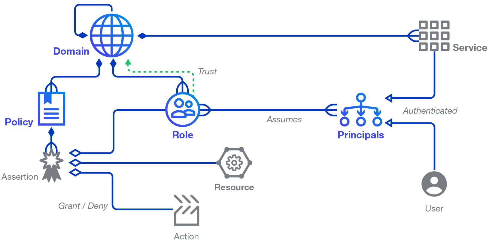

Architecture - Data Model
Having a firm grasp on some fundamental concepts will help you understand the Athenz architecture, the flow for both centralized and decentralized authorization, and how to set up role-based authorization.
Concepts
- Role based Access Control (RBAC) system
- Symbolic names are used to identify the entities involved in authorization, so humans can read and understand the assertions
- Namespaces are strictly partitioned into Domains, which imply an ownership and control aspect to the names
- Enforcement can be factored such that it can be done in a distributed way, making possible data-plane checks that do not go off-box
- Administrative tasks can be delegated to created subdomains to avoid reliance on central "super user" administrative roles.
- Multi-tenancy relationships across domains can also take advantage of delegated administration
- Cryptographic signatures are used to ensure the fidelity of assertions and their lifecycle attributes
- Policy orientation, as opposed to Resource orientation, allows few assertions (in policies) to affect a potentially large number of resources, and also allows more flexible scoping via wildcarding over groups of resources.
- In Athenz, the authorization management server converts all incoming data to lowercase before any processing - this applies to all data types within Athenz (e.g. domain names, role names, policy names, resource group values, etc).
Data Model

Terminology
- Domain - a partition/namespace/account of control and isolation
- Role - an entity that takes action on resources, when assumed by a principal
- Resource - an entity to take action on, referred to by unique name
- Policy - a set of assertions that govern usage of resources
- Assertion - a quadruple of <effect, role, action, resource>
- Principal - an authenticated user or service that assumes one or more roles
- User - a user identity that is authenticate by a particular authority like Bouncer
- Service - An identity that exposes reusable resources, authenticated by an Athenz-aware container, reachable via an explicit endpoint.
- Provider - a type of service that participates in the multi-tenant provisioning protocol.
- Tenant - a Domain that is provisioned to access some Resources in a Provider
- Group - A group is a Role with explicit principal assignments
- Control Plane - operations done to provision or otherwise setup a system, outside its normal operation.
- Data Plane - operations done in the normal usage of a system, after it is set up. These operations are usually highly performance sensitive
There are numerous domains, and domains can themselves “contain” subdomains, from a creation/deletion perspective. However, all domains and subdomains, regardless of their administrative relationships, are independent and share no state. Relationships between them (i.e. quotas, billing roll ups, etc) must be explicitly introduced if desired. Roles, Policies and their Assertions, and Services are all defined in a Domain.
Domains
Domains are namespaces, strictly partitioned, providing a context for authoritative statements to be made about entities it contains. Only system administrators can create and destroy top level domains. Each such domain is assigned users in an administrative role. Those admins can, in turn, create and delete subdomains, that is, domains that start with the parent domain as a prefix, using a '.' as a domain delimiter. For example, "media" is a top level domain, and "media.news" is a subdomain of it. It is important to note that the only relation between these two domains involves creation and destruction of the domains -- the two domains share no state by default, and there is no inheritance or other relation between them other than that implied by their names. This allows all domains (whether top level or subdomains) to be completely partitioned from each other, and the ownership of the entities defined within a domain is clear.
A domain is a place to group your resources and entities.
- All resources are partitioned across some set of domains
- Domains are given a symbolic name, so humans can easily understand a reference to them
- The domain name is used as a namespace for resource names
- Domains are similar the concept of an account, and provides a “walled garden” in which to operate
Resources
Resources aren't explicitly modeled in Athenz, they are referred to by name. A resource is something that is "owned" and controlled in a specific domain.
- Concrete example: a machine
- Abstract example: a security policy
- Identified by a canonical name, so humans can comprehend references to it
When referring to resources for authorization, a global naming system needs to be introduced to handle names in namespaces. A Resource Name is defined as follows:
{Domain}:{Entity}
The Domain is the namespace mentioned above, and the Entity is an entity path (delimited by periods) within that namespace. The two are often used together to form a short resource name. For example, if the media.news property provisions a table in a db service, the resource name for the table may look like this:
media.news:storage.db.table
Policies
To implement access control, we have policies in our domain that govern
the use of our resources. A policy is a set of assertions (rules) about
granting or denying an operation/action on a resource. For example, the
assertion [grant, update, dev, storage.db.table] would grant the
update operation/action to all the members in the dev role on
the storage.db.table resource. Note that the assertion fields are
declared as general strings, as they may contain "globbing" style
wildcards, for example "media.news:role.*", which would apply to any
entity that matched the pattern.
Roles
A role can be thought of as a group, anyone in the group can assume the role that takes a particular action. Every policy assertion describes what can be done by a role.
A role can also delegate the determination of membership to another trusted domain. For example, a netops role managed outside a property domain. This is how we can model tenant relations between a provider domain and tenant domains.
Because roles are defined in domains, they can be partitioned by domain, unlike users, which are global. This allows the distributed operation to be more easily scaled.
Principals
The actors in Athenz that can assume a role are called principals. These principals are authenticated and can be users (for example, authenticated by their Unix or Kerberos credentials). Principals can also be services that are authenticated by a service management system. Athenz currently provides service identity and authentication support. In either case, the identity is expressed as a resource name, and the proof of that identity is provided as a token, typically called an NToken (aka PrincipalToken).
Users
Users are actually defined in some external authority, e.g. Unix or Kerberos system. A special domain is reserved for the purpose of namespacing users, the name of that domain is user, so some example users are:
- user.john
- user.doe
The credentials that the external system requires are exchanged for a NToken before operating on any data.
Services
The concept of a Service Identity is introduced as the identity of independent agents of execution. Services are defined as a subdomain of the managing domain, which provides a simple way of naming them. For example:
- media.news.msbe
- sports.storage
The relationship of a service identity and its parent domain essentially means that the parent domain is an authority for the service itself, from a management perspective.
A Service Identity may be used as a principal when specifying Roles, just like a User. Athenz provides support for registering such a Service Identity, in a domain, along with its public key that can be used to later verify an NToken that is presented by the service.
Tokens
Athenz authorization system utilizes 2 types of tokens: Principal Tokens (NTokens) and RoleTokens (ZTokens).
Principal Token (NToken)
The Principal token can be thought of an identity token because it identifies either a user or a service. Users submit their credentials to ZMS, which validates those credentials and generates, signs and returns principal tokens. A service generates its principal token using the service's private key. The principal token can then be used to access role tokens.
A principal token is serialized as a string with following attributes:
- version (v) - the version of the token - U1 for user tokens and S1 for service tokens
- domain (d) - the domain of principal. For users this will always be "user"
- name (n) - the name of the principal
- host (h) - the FQDN of the host that issued this token
- salt (a) - a salt
- time (t) - the time the token was issued
- expires (e) - the time the token expires
- keyId (k) - the key identifier of the private key that was used to sign this token
- ip (i) - the IP address where the request to get this token was initiated from
- authorized-services (b) - the list of services authorized to use this user token
- signature (s) - the signature of the other items
The single letter in parentheses is the key in the serialized string, where semicolons separate key value pairs, and the key and value are separated by an equals sign.
For example:
v=U1;d=user;n=joe;h=host.athenz.org;a=bb4e;t=1442255237;e=1442258837;k=0;i=10.72.42.32;s=Jw8SvYGYrk
Note that requests that include a principal token should be protected to keep the token from being intercepted and reused (for the lifetime of the token). It is strongly recommended to always use HTTPS for such requests.
Role Token (ZToken)
Role tokens represent an authoritative statement that a given principal may assume some number of roles in a domain for a limited period of time. Like NTokens, they are signed to prevent tampering. In a sense, the ZTS is an authority except that it is an authority over Roles instead of Users.
A role token is serialized as a string with following attributes:
- version (v) - the version of the token - Z1
- domain (d) - the domain of role token
- roles (r) - a list of comma-separated role names
- principal (p) - the name of the principal (user/service) who requested this role token
- host (h) - the FQDN of the ZTS host that issued this token
- salt (a) - a salt
- time (t) - the time the token was issued
- expires (e) - the time the token expires
- keyId (k) - the key identifier of the ZTS private key that was used to sign this token
- ip (i) - the IP address where the request to get this token was initiated from
- signature (s) - the signature of the other items
The single letter in parentheses is the key in the serialized string, where semicolons separate key value pairs, and the key and value are separated by an equals sign.
For example:
v=Z1;d=media.news;r=editor;p=user.joe;h=host.athenz.com;a=bb4e;t=1442255237;e=1442258837;k=0;i=10.72.42.32;s=P43Vp_LQh1"
Note that requests that include a ZToken should be encrypted to keep the ZToken from being intercepted and reused (for the lifetime of the token). It is strongly recommended to always use HTTPS for such requests.